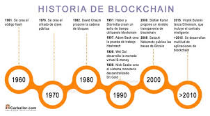

Introduccion a la Tecnologia Blockchain

Blockchain es un libro de contabilidad compartido e inmutable que facilita el proceso de registro de transacciones y seguimiento de activos en una red empresarial.
Un activo puede ser tangible (una casa, un coche, dinero en efectivo, un terreno) o intangible (propiedad intelectual, patentes, derechos de autor, marca). Prácticamente cualquier cosa de valor puede rastrearse y negociarse en una red de blockchain, reduciendo el riesgo y los costes para todos los implicados.
Historia y evolucion del Blockchain

La tecnología blockchain ha evolucionado de la mano de sus aplicaciones, que se han extendido más allá del sector financiero:
Blockchain 1.0
La aplicación más desarrollada y reconocida de blockchain, en la que se implementaron las criptomonedas.
Blockchain 4.0
La tecnología blockchain ha evolucionado hacia un estado de mayor madurez.
Interoperabilidad
La interoperabilidad con el mundo centralizado puede aportar mayor rapidez y eficiencia a blockchain.
Principios basicos y Terminologia clave
a tecnología blockchain se basa en principios de criptografía, descentralización y consenso, que garantizan la confianza en las transacciones.
Algunos de los principios básicos de blockchain son:
Seguridad
Blockchain es más seguro y confiable que otros sistemas de bases de datos.
Transparencia
Blockchain utiliza un sistema de "libro mayor" de transacciones que garantiza la transparencia para los participantes de la red.
Descentralización
El libro de contabilidad se distribuye entre muchos nodos, por lo que no existe una sola copia, sino muchas que se actualizan rápidamente.
Protocolos de aprobación
Cada red de blockchain tiene sus propios métodos de actuación para validar las transacciones.
Inmutabilidad
Los registros no se pueden modificar, ya que cualquier transacción que se haga queda ahí para siempre.